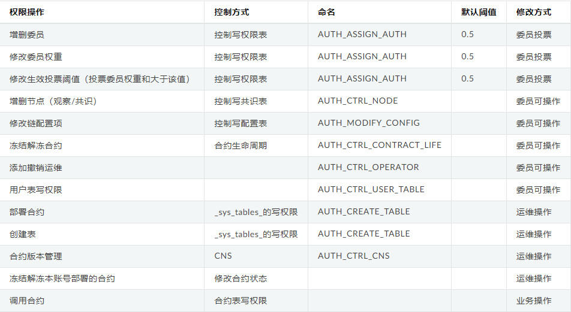

FISCO-1-账户权限控制
账户权限控制
1 基于角色的控制权限
角色定义
分为治理方，运维方，监管方和业务方。 考虑到权责分离，治理方、运维方和开发方权责分离，角色互斥。
治理方: 拥有投票权，可以参与治理投票(AUTH_ASSIGN_AUTH),可以增删节点、修改链配置、添加撤销运维、冻结解冻合约、对用户表的写权限控制。链级别的可变配置的权限。
运维方: 由治理方添加运维账号，运维账号可以部署合约，创建表，管理合约版本，冻结解账本账号部署的合约。
业务方: 业务方账号由运维添加到某个合约，可以调用该合约的写接口
监管方: 监管方监管链的运行，能够获取链运行中权限变更的记录，能够获取需要审计的数据。
权限
简称治理账号为委员
权限项命名符合动宾结构
增删委员、修改委员权重、修改生效阈值三个操作，需要 有效投票权重/总权重 > 生效阈值 生效，其中 总权重=SUM(委员权重)
治理账号可以添加运维账号，但是治理账号不拥有运维账号的权限
运维账号可以为某个合约添加业务账号，但是运维账号没有业务账号权限。

权限项

计票与生效
- 所有治理操作需要有效投票数/委员数>生效阈值才能生效
- 每次投票操作，如果是委员投票，则记录操作内容和投票委员，不重复计票
- 每次投票操作，计票结束后，计算有效投票数/委员数，如果大于此操作的生效阈值，则对应操作生效，写入
- 投票设置过期时间，根据块高，blockLimit的10倍，固定不可改
功能列表
- 增删委员计票与生效
- 修改委员权重计票与生效
- 修改生效阈值计票与生效
- 委员增删运维
- 委员解冻冻结合约
- 委员增删节点
- 委员修改系统配置
- 权限项默认阈值存储
- 运维部署合约的权限
- 运维管理合约版本的权限
委员相关
1 | |
运维相关
1 | |
数据结构
表: sys_committee_votes
1 | |
key是账户，value记录grant/revoke，origin记录投票人
key是账户_update_weight，value记录目标权重，origin记录投票人
key是账户_weight，value记录权重
key是auth_threshold，value记录当前阈值
key是update_auth_threshold，value记录目标阈值，origin记录投票人
2 账户权限控制
- 创建group1user1，group1user2 两个用户
- 增加链委员: 此时没有链委员，可以直接增加成功 group1user1 为治理委员
- 用链委员group1user1 新增委员: group1user2, 此时 投票数1/委员数1 =1 > 0.5 新增成功
- 去除委员group1user1, 需要用 链委员 user1,user2 分别撤销user1，都完成后，此时委员仅剩user2
- user2增加委员user1，成功
- user1和user2 都增加user3成功，单独执行一个不成功
此时:
开始部署合约，委员没有权限
只能由运维部署，部署成功，开始调用，委员和运维都可以调用成功
本博客所有文章除特别声明外，均采用 CC BY-SA 4.0 协议 ，转载请注明出处！